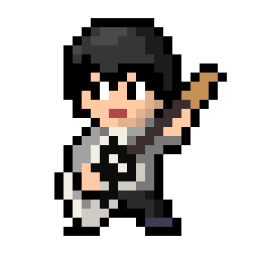

- Guitar
- Programming
- Guitar
- Programming
名前 ： 岩村充基
年齢 ： 21歳
出身 ： 日本、大阪
趣味 ： 音楽、ゲーム
自己紹介 ：
岩村充基と申します。普段は音楽を聴いたりゲームをしたりしています。音楽はロックやポップスといった王道から、ジャズやゲームのサウンドトラックまで様々なジャンルの音楽を聴きます。
好きなゲームのジャンルはRPGです。その中でも特に好きなタイトルはMOTHER2とFINAL FANTASY VIIです。ストーリーもゲーム性も大好きです。
過去 ：
1999年6月19日、日本の大阪で生まれる。幼い頃は活発であり、高いところから飛び降りたりするような危なっかしい少年だった。
小学生からサッカーを始めるもあまり得意ではなかった。しかし熱意は誰よりもあったためサッカー部の主将になる。
中学に進級した後もサッカー部に入ったが、練習が厳しく、よく挫折していた。チームスポーツが向いていないと気づき、フリースタイルフットボールに出会い没頭した。
中学2年生のころ、友人にRADWIMPSを紹介されたのが音楽を深く知るきっかけとなった。そこからギターを始めるなど、音楽に触れる機会がかなり多くなった。
高校に入るとサッカーをやめ、音楽に没頭するようになった。高校2年生の頃にYouTubeを始め、ある程度人気が出て調子に乗ってしまったため、そこで性格が拗れたと思っている。受験期は必死に勉強するもなかなか結果が出なかったが、受験当日は頭が冴えていたため二問しか間違えなかったという伝説がある。
大学に入り、何人か友人ができたがあまり深い関係にはならなかった。学業が忙しくなったものの、音楽に対する熱は冷めず、活動を続けていた。大学3年になり、コロナの影響で引きこもりのような生活を余儀なくされたが、そこでプログラミングをはじめ、エンジニアになると決意する。そして今これを作ってる。
中学からギターを始め、RADWIMPSなどを中心にコピーしていた。それから様々な曲をコピーするようになり、演奏技術含めDAWや音楽的な知識も身につけていった。
YouTube上で活動しており、「自分にしかない個性」というものを重んじており、他の人間と一緒のことをすることに意味を感じない性分だったため、原曲通りに弾く奏者が多い中アレンジこそが自分のアイデンティティであり、武器であると考えている。
幼い頃からパソコンを好んで触ることが多く、IT技術を駆使したモノづくりが好きだったため、コロナの影響による自粛期間中にプログラミングの学習を始めた。
動画教材を使って独学で350時間ほど学習しており、言語は主にJavaScript, PHPを学びつつ、Vue,jsやPHP Laravelなどのフレームワークもいくつか学習している。
将来は必ずIT業界に進出し、エンジニアになると決めている。

これまでのメインとなる活動内容です。主にギターの演奏動画を撮影、編集しYouTube, Instagramにて投稿しています。
YouTubeでの活動に付随して写真も投稿しています。ギターの写真や、日常での写真などをInstagramにて投稿しています。
今現在エンジニアを目指して学習しているプログラミングにおいて、個人で制作した成果物をGithubにて投稿しています。